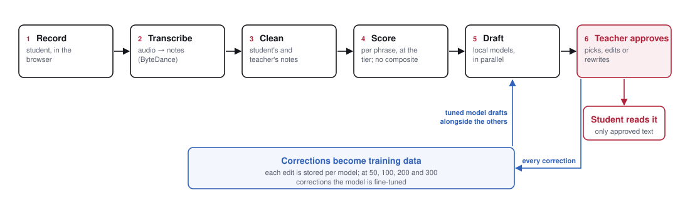
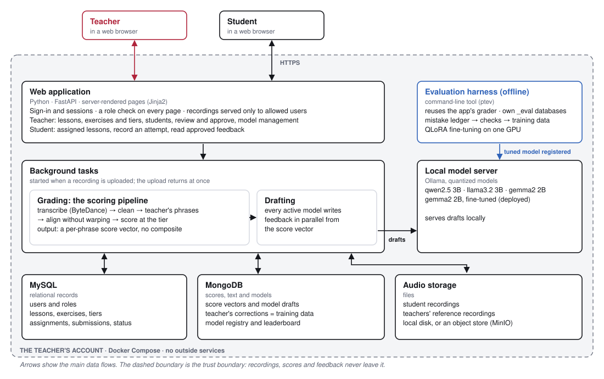
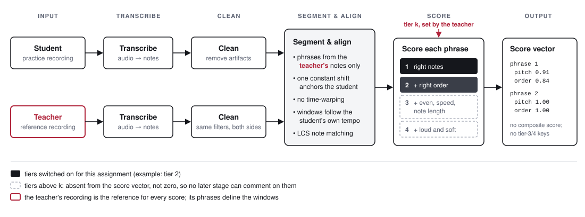
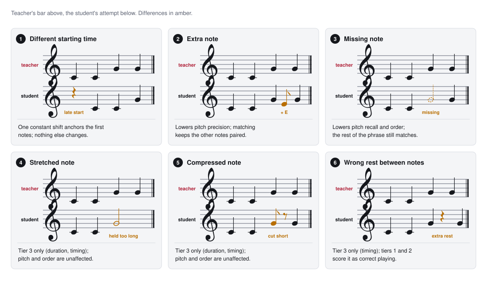
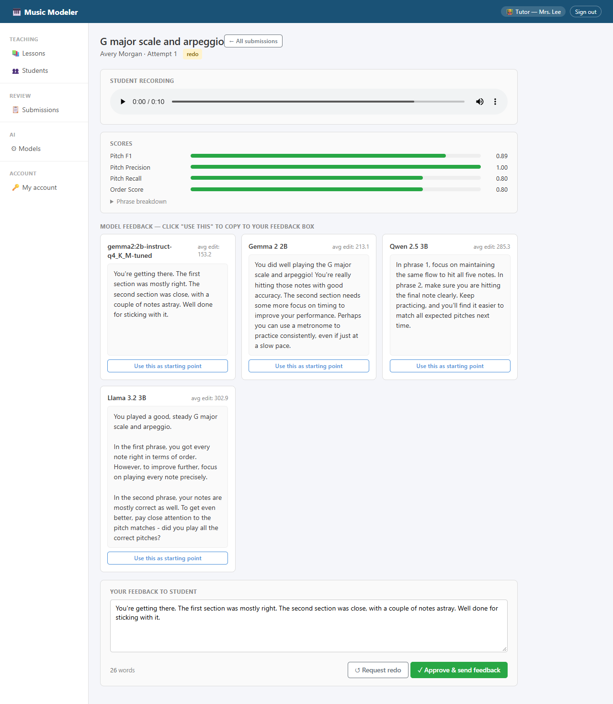
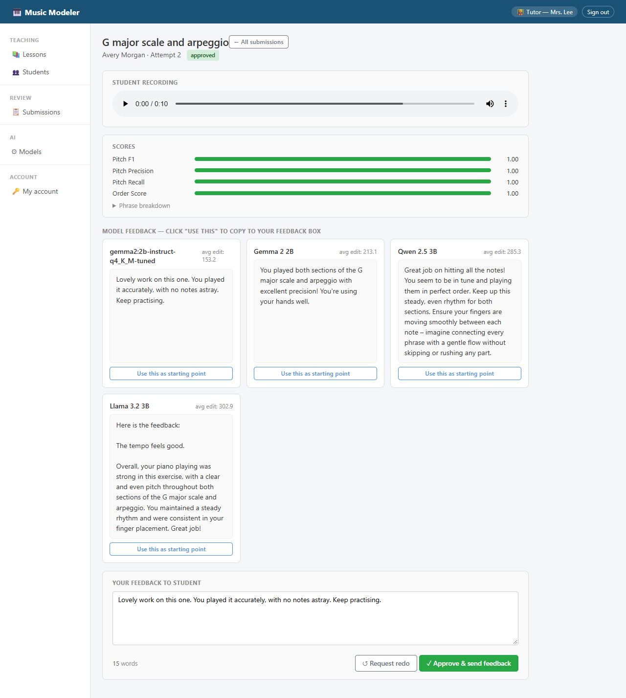
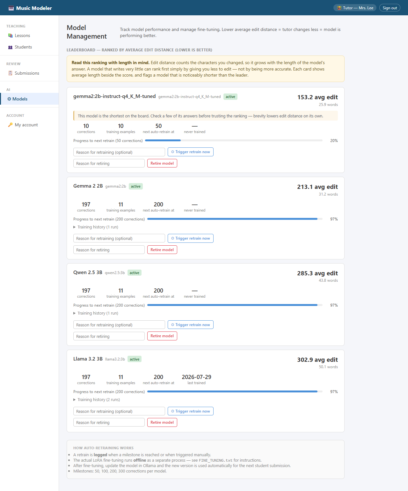

From notes to kind words.
A Tiered‑Scoring Pipeline and Teacher‑tailored Language Models to provide encouraging feedback to students based on their piano practice
Aruna Nagabhushan
Neuqua Valley High School, Naperville, IL
Summer Internship 2026, Vanderbilt University
Under the guidance of Dr. Aniruddha Gokhale, Dr. Himanshu Neema and Dr. Yogesh Barve, Vanderbilt University
The teacher hears the child once a week.
A mistake practiced all week gets learned.
Wrong advice is worse than none: a child will practice it.
Music Modeler scores each practice recording against the teacher's own recording, and small local language models draft encouraging feedback that the teacher approves.

The student only ever sees text the teacher approved. Every correction becomes training data.


Tiers 1–2 never score speed: slow, careful practice is right for a beginner.
Note accuracy (F1): lighter model vs ByteDance's.
Notes kept at half speed, after phrase windows followed the student's tempo.
Tempo score at 3× too slow, plus a "very slow" flag, from tier 3 only.
Correct playing at 3× slow, once note length was judged for the student's own speed.
simulated practice attempts
recorded mistakes, 8 kinds
checks against the record, all passed
simulated students moving up the tiers

One sentence per phrase, under 60 words.
No numbers, no jargon. Warm first, then one thing to try.
Only what was measured. No tempo flag means the speed was fine.
of the time, off-the-shelf models still told a beginner to fix their speed, at levels where speed isn't even measured. A stricter prompt didn't help.
Full prompt text: piano-tutor-app/docs/05_llm_feedback.md · the judge's prompts: piano-tutor-eval/docs/06_prompts.md

One missed note per phrase, at tier 2, where timing isn't scored. Yet:
gemma"…more focus on timing… use a metronome."
qwen"…hitting the final note clearly." (the missed note wasn't the last)
llama"…every note right in terms of order." (order 0.80)
■ before training ■ after training · 239 of 558 drafts → 3. Three models, one 8 GB GPU.
■ accuracy ■ tone · out of 3, blind judge
drafts from the deployed model rated top for being encouraging and clear to a child.
accuracy of warm decoys attached to the wrong performance. Kindness alone is easy; the judge catches it.
Tier 2, so speed is not scored. Pitch 0.889 and order 0.8 in both phrases.
…keeping the pace up a bit… good timing overall…invents pace, timing
…one note behind the beat… your sense of rhythm…invents rhythm
…precision in timing… even pacing…invents timing
You're getting there. Nearly every note landed in the first section. The second section was close, with a couple of notes astray.accurate and warm
Good effort — a promising attempt. The first section was mostly right. The second part was close…accurate and warm
Good effort — the first part was close, and the second part was spot on…warm, wrong on phrase 2

Approve: the teacher rewrites or picks a draft.

Tailor: retraining at 50, 100, 200 and 300 corrections.
| Yousician | Simply Piano | Skoove | Piano Marvel | SmartMusic | MatchMySound | Music Modeler | |
|---|---|---|---|---|---|---|---|
| Teacher's own recording as reference | no | no | no | no | no | yes | yes |
| Strictness set per student | no | no | no | levels | — | — | 4 tiers |
| Written feedback, phrase by phrase | no | no | no | no | teacher types | teacher types | AI drafts |
| Teacher approves before the student sees it | no | no | no | no | no | no | yes |
| Teacher's edits improve the system | no | no | no | no | no | no | yes |
| Feedback while you play | yes | yes | yes | yes | yes | yes | after: evaluated as a whole |
From vendor pages and independent 2026 reviews; "—" means the sources didn't say.
Pitch as a continuous contour around the tonic, because ornaments (gamakas) glide.
Syllables (akṣara) aligned against the known text.
What carries over unchanged: tiered scores, the child-centered rules, teacher approval, the tailoring loop and the testing harness.
More: the project page · the walkthrough · notes on the numbers